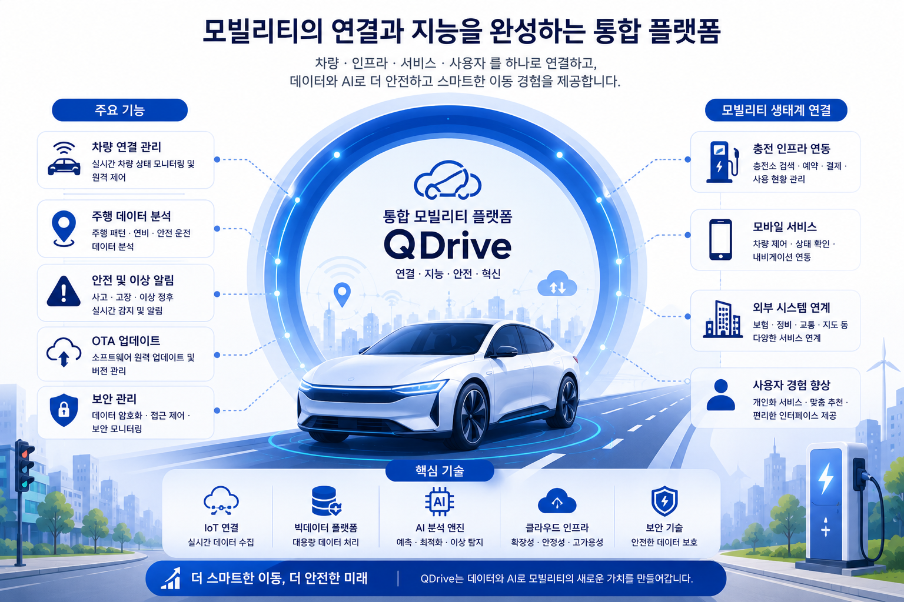
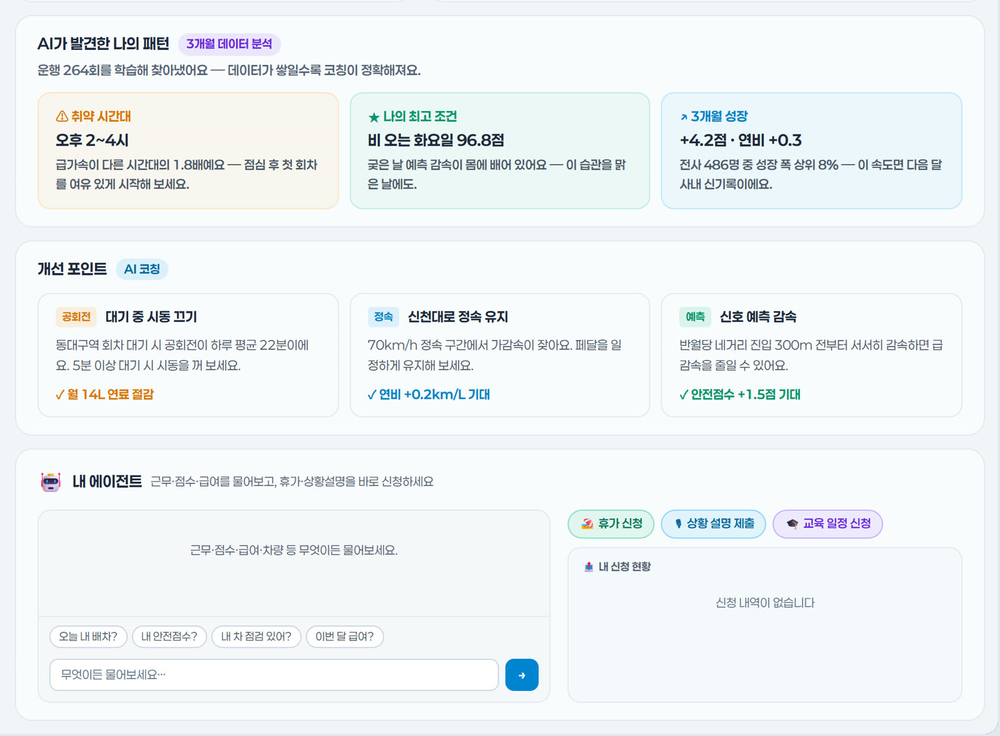
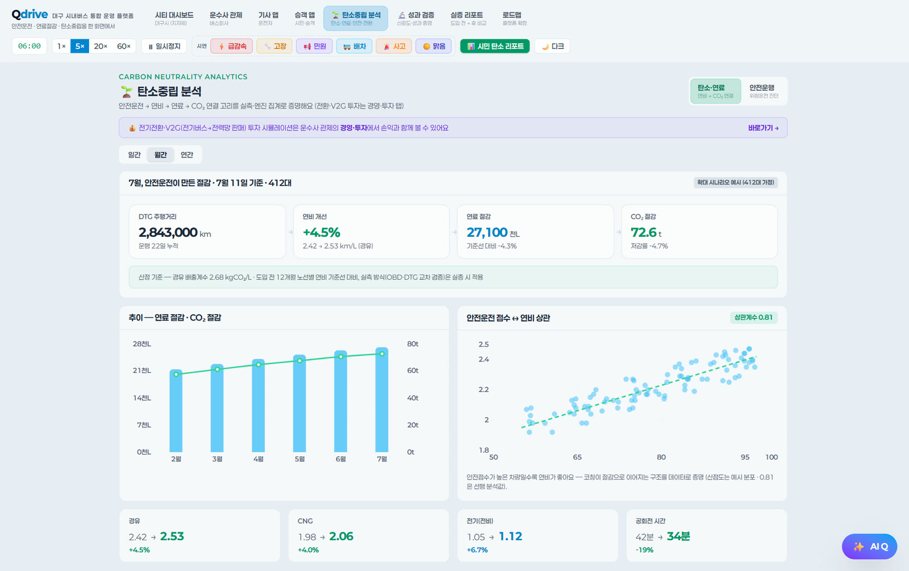

QDrive
운행기록·
차량 운행 데이터를 더 나은 운영으로 연결합니다.
운행·진단 데이터로 위험운전과 운영·비용·탄소 성과를 확인합니다.

모빌리티 운영에 필요한 정보를 한눈에 확인합니다
운영자·차량 관리자·운전자가 같은 데이터를 목적에 맞게 활용하고 개선 결과를 함께 확인합니다.
차량 통합 관제
차량 위치와 운행 상태, 사고·고장·위험운전 이벤트를 통합해 전체 플릿의 흐름과 우선 대응 대상을 빠르게 파악합니다.
- 실시간 통합 현황 차량 위치·운행률·가동 상태·돌발 상황을 지도와 지표로 확인
- 위험구간 분석 급가속·급감속·급회전이 반복되는 구간을 날씨·도로 맥락과 함께 파악
- 운영 성과 비교 차량·운전자·운행 구간별 안전·연료·운영 효율을 같은 기준으로 비교

통합 모빌리티 관제 — 프로토타입 예시 화면
차량·운전자 단위 운영
차량과 운전자별 운행 상태를 정리하고, 고장 징후와 운행 수요를 바탕으로 정비·배차·투입 계획을 조정합니다.
- 차량·운전자별 현황 운전점수·연료·가동률·운행거리와 이벤트 이력을 단위별로 확인
- 예방정비 예측 차량 진단(OBD)·CAN 신호로 고장 가능성과 정비 시점을 미리 파악
- 운행 계획·기록 수요에 맞춰 차량 투입을 조정하고 운행기록과 처리 이력을 관리

플릿 운영 대시보드 — 프로토타입 예시 화면
운영 성과·투자 지표
연료비 절감과 예방정비 효과, 운전자 인센티브를 합산해 월별 운영 성과와 다음 투자 판단에 필요한 지표를 보여줍니다.
- 월 손익 구성 연료비 절감·
정비 회피 비용· 인센티브를 합산한 월 순효과 - 월별 절감 추이 도입 이후 절감액 변화를 기간별로
- 성과 분포·
벤치마크 운전자·차량군별 성과와 유사 운영군의 절감률 비교

모빌리티 경영·
운전자 맞춤형 안전 코칭
도로·날씨·운행 조건을 반영해 운전 행동을 설명하고, 안전과 에너지 효율을 높일 개선 방법을 함께 제공합니다.
- 맥락 보정 평가 도로 혼잡·날씨·운행 조건을 반영해 단순 점수보다 합리적인 평가 제공
- 행동 단위 코칭 공회전·정속 유지·신호 예측 감속처럼 바로 실천할 항목 제시
- 개선 효과 확인 코칭 적용 전후의 안전점수·연료·에너지 사용량 변화를 비교

운전자 앱 리포트 — 프로토타입 예시 화면
탄소·에너지 절감 분석
운행기록(DTG)의 주행거리와 연비를 기준으로 배출 절감량을 산정하고, 운전 습관이 연비에 미치는 영향까지 함께 봅니다.
- 주행·
연비 기준 산정 운행기록(DTG)의 주행거리와 연비로 배출 절감량 산정 - 안전운전 ↔ 연비 상관 운전 습관이 연비에 미치는 영향을 지표로
- 기간별 추이 개선 효과를 기간 단위로 누적 표시

탄소·
도입 효과 비교·검증
AI를 적용하지 않은 조건과 코칭 전후의 운전 그룹을 비교해 개선 효과의 근거를 남깁니다.
- 미적용 가정과 비교 같은 조건에서 AI를 쓰지 않았을 때와 견준 효과
- 그룹별 코칭 효과 운전 그룹을 나눠 코칭 적용 전후 비교
- 교차 검증 차량 자가진단(OBD)과 운행기록(DTG) 대조로 수치 근거 확보

성과 검증 — 프로토타입 예시 화면
차량과 운영 환경에서 나오는 데이터를 하나의 기준으로 연결합니다
운행·진단·위치·통신·충전 데이터를 표준으로 연결해 분석·운영에 활용합니다.
| 데이터 | 수집·분석 항목 | 연결 장치 | 표준·인터페이스 |
|---|---|---|---|
| 운행기록 | 속도·RPM·주행거리·급가감속·운전 습관 | 디지털 운행기록계(DTG) | 운행기록 표준 · 시리얼·USB |
| 차량 진단 | 엔진·연료·배터리·고장코드·소모품 상태 | 차량 진단 장치(OBD) | OBD-II PID · CAN·CAN-FD |
| 위치·이동 | 실시간 좌표·속도·이동 경로·운행 구간 | GPS·GNSS·정밀측위 수신기 | NMEA 0183 · RTK·RTCM |
| 데이터 전송 | 차량·센서·운영 데이터 실시간 전송 | 차량용 게이트웨이·통신 모듈 | LTE Cat M1 · MQTT·HTTPS |
| 에너지·충전 | 배터리 상태·전력 사용량·충전 세션·충방전 계획 | BMS·충전기·충전 인프라 | OCPP · ISO 15118 |
| 탄소 배출 | 주행·연료·전력 소비 기반 배출량과 저감량 | 운행·진단·에너지 데이터 조합 | GHG Protocol · ISO 14064 |
QDrive 도입 효과
통합 차량 운영
위치·운행·진단 상태를 한 화면에서 확인하고
차량과 운영 조직이 같은 데이터를 공유
안전운전·정비 개선
위험운전과 고장 징후를 미리 파악하고
운전자 코칭과 예방정비에 반영
에너지·충전 최적화
차량별 배터리와 전력 사용량을 분석해
충전 일정과 차량 투입 계획을 최적화
탄소 성과 관리
주행·연료·전력 데이터로 배출량을 계산하고
운영 개선에 따른 저감 효과를 검증
이런 모빌리티 사업에 적합합니다
차량 운행·안전·에너지·탄소 정보를 통합 관리하는 조직에 적합합니다.
대중교통·셔틀·MaaS 운영
다수 차량의 위치와 운행 상태를 관제하고 안전·운행 품질을 함께 관리해야 하는 사업
물류·배송·현장 서비스 차량
운행거리와 가동률을 높이면서 연료비·사고·정비 비용을 줄여야 하는 플릿 운영 조직
렌터카·카셰어링·법인차 운영
차량 상태와 이용 이력을 표준화하고 안전운전·예방정비·운영 보고를 체계화해야 하는 사업
전기차 플릿·충전 인프라 운영
배터리와 충전 상태를 차량 운행 계획에 연결하고 에너지 비용·탄소 저감 효과를 관리해야 하는 조직